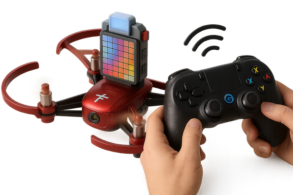

Tello controller navigation - Part 2
2025-05-11
- Learn how to connect a physical GameSir T1d controller to a real Tello drone using Python and djitellopy, moving beyond simulation.
- See how to integrate live video streaming from the Tello into your Pygame app, including handling frames and displaying them in real time.
- Get practical code examples for replacing the simulator with a real drone interface, managing video streams, and troubleshooting common issues.
- Understand the structure needed to glue together controller input, drone commands, and video feedback for a seamless flying experience.
- Prepare for the next step: using this setup as a foundation for future machine learning and autonomous drone experiments.
Series: Code, Fly & AI
Time to fly
This blog is supposed to show my progress with machine learning, but we haven’t touched that yet at all! That will still be the case in this post, but we are close to wrapping up the drone control.
It is time to combine our previous efforts and connect the drone interface (djitellopy) with the controller interface (gamesir-t1d).

From simulator to Tello
Let’s start with the most bare approach and replace the TelloSimulator with a new class TelloDrone, with a similar interface, but driving the Tello via djitellopy.
The FlightController stays as it was, so we have all the deadbanding and smoothing goodies there.
Finally, we need to glue these classes together in a similar way we did with the simulator, but without the “fancy” visualization.
The code looks like this at this stage: tt-fly WIP.
And yes, it flies!
Add video streaming
We accomplished what we were set out to do! At least, I was :) Now that we have some momentum, let’s add the video stream.
The djitellopy library makes it straightforward. In the TelloDrone class we initialize video streaming:
# Make sure stream is off before turning it on
try:
self.tello.streamoff()
print("Stopped any existing video stream")
except Exception as e:
print(f"Note: {e}")
# Initialize frame reading with low quality settings
self.tello.set_video_resolution(self.tello.RESOLUTION_480P)
self.tello.set_video_fps(self.tello.FPS_30)
self.tello.set_video_bitrate(self.tello.BITRATE_4MBPS)
# Now turn on the stream
self.tello.streamon()
# Get the frame reader
self.frame_read = self.tello.get_frame_read()
print("Video stream initialized successfully")Also, we add a method to expose the frame reader to the main app:
def get_video_frame(self):
"""Get the current video frame from the drone."""
if self.frame_read is None:
return None
try:
frame = self.frame_read.frame
if frame is None or frame.size == 0:
print("Warning: Received empty frame")
return None
return frame
except Exception as e:
print(f"Error getting video frame: {e}")
return NoneFinally, we read frames from the main app and display it in the pygame window:
# Display video frame if available
frame = self.drone.get_video_frame()
if frame is not None:
# Track FPS
self.frame_count += 1
now = time.time()
if now - self.last_frame_time >= 1.0: # Calculate FPS every second
fps = self.frame_count / (now - self.last_frame_time)
self.fps_stats.append(fps)
if len(self.fps_stats) > 10:
self.fps_stats.pop(0)
self.frame_count = 0
self.last_frame_time = now
# Convert numpy array to pygame surface
try:
# Ensure frame has the right format for pygame
frame = cv2.cvtColor(frame, cv2.COLOR_BGR2RGB)
# Create a PyGame surface
h, w = frame.shape[:2]
pygame_frame = pygame.Surface((w, h))
pygame.surfarray.blit_array(pygame_frame, np.swapaxes(frame, 0, 1))
# Scale if needed
if pygame_frame.get_size() != (
self.video_rect.width,
self.video_rect.height,
):
pygame_frame = pygame.transform.scale(
pygame_frame, (self.video_rect.width, self.video_rect.height)
)
self.screen.blit(pygame_frame, self.video_rect)
except Exception as e:
print(f"Error displaying frame: {e}")
# Draw a red border to indicate error
pygame.draw.rect(self.screen, (255, 0, 0), self.video_rect, 2)
else:
# Draw a placeholder for video
pygame.draw.rect(self.screen, (40, 40, 60), self.video_rect)
no_video = self.font.render("No Video Feed", True, (150, 150, 150))
text_rect = no_video.get_rect(center=self.video_rect.center)
self.screen.blit(no_video, text_rect)Source for the complete code base: tt-fly
Test flight!
Time to try it out with an audience:
I think I worked on this more than enough, and I have a plenty of experience with remote controlling a drone now. Time to move on…
What’s next?
It is about time to introduce some machine learning. If the goal is to work towards an autonomous drone, at some point I have to get my feet wet. I have plenty of ideas on what to experiment with. Read on for the first one…